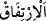

Bahru’l-ulûm’da şöyle der: “Kim îmânı tercih ederse, bütün güç ve irâdesini îmânı
elde etme yönünde sarf etsin: Bu da Allah katından gelenleri bütün kalbiyle tasdik
etmekten ibarettir. Kim de îmânın yokluğunu isterse onu tercih etsin. Bunların her ikisine
de aldırmam.”
Burada kulun îmânında da inkârında da seçimi ve tercihi olduğuna delâlet vardır.
Îman ve inkâr Allah’ın yaratması ve kulun fiilinin birlikte olmasıyla gerçekleşen iki
fiildir. Mesela namaz, oruç gibi ihtiyârî fiilleri de böyledir. Çünkü bu fiillerden her biri
Allah’ın var etmesi ve kulun kesbinin bir araya gelmesi ile olmaktadır. Bu cebir ve
kadercilik arasındaki hak yoldur. Eğer böyle olmasaydı, yaptıklarından ötürü kullar
hakkında şu ilâhî tehdid vârid olmazdı:
“Şüphesiz biz,” kendilerine küfrü seçip onu îmâna tercih ederek kendilerine zulmeden
“zâlimlere öyle” büyük ve hayret verici “bir cehennem hazırladık ki, onun duvarları
kendilerini çepe çevre kuşatmıştır.” Âyette ateşin onları kuşatması, adeta kendilerini
örten bir çadıra benzetilmiştir. Bahru’l-ulûm’da şöyle der: “es-Sürâdik” çadırın
etrafını tavansız olarak çevreleyen duvarlar, demektir. Ebû Saîd (r.a.)’dan rivâyet
edildiğine göre Rasûlullah (s.a.) şöyle buyurmuştur: “Cehennem ateşini çevreleyen
çadırlar, dört kesif duvardır. Her duvar kırk yıllık yoldur.”[173]
“(Susuzluktan) imdat dileyecek olsalar” eğer susuzluktan feryad ederlerse
“imdatlarına, erimiş maden gibi yüzleri haşlayan” kızartıp yakan, eritilmiş demir
(lav) gibi kızgın “bir su ile cevap verilir.”
Bu ifâde başka türlü de tefsir edilmiştir. Âyetteki üslub, onları küçümseyip azarlamak
için seçilmiştir. Yâni ateşin harareti ile su talep ettikleri vakit onlara su yerine kızgın
maden eriyiği verilir. Onu içmeye başladıkları vakit harâretinden dolayı yüzleri
haşlanır. O, Nebî (a.s.)’ın da buyurduğu gibi “zeytin yağı tortusu gibi”[174] simsiyahtır.
Kişi o simsiyah ve galîz içeceğe yaklaşınca onun harâretinden yüzünün derisi dökülür.
İşte bu şekilde tavsif edilen bu su: “Ne fenâ bir içecek” cehennem ehlinin maksadı bu
şekilde hararetini yatıştırmak olduğu halde, yukarıda tavsîf edilen içecek onları iyice
yakar. “Ve” cehennem de “ne kötü bir kalma yeri!” Yâni, ne kötü yaslanma yeri ve ne
kötü mekândır. “__WORD__ el-İrtifâk”ın asıl mânâsı, dirseği yanağın altına dayamak
demekir. Böyle bir şeyin cehennemde olması ne mümkün! Bu ifâde (31. âyette gelecek
olan) “ne güzel kalma yeri” kavlinin mukabilidir.
Müftî Sa‘dî şöyle demiştir: “Dirseğe dayanmak, istirahat için olduğu gibi bazen
şaşkınlık ve hüzün için de olur. Ancak burada birincisinin olmadığı müsellem olduğuna
göre bir anlam karışıklığı söz konusu değildir.”
Fakir (Bursevî) der ki: Ancak bununla gerçek anlamda dayanma kasdedilmez. Belki
burada kasdedilen menzildir. Çünkü onların menzili, cehennem olduğu için istirahat
edilecek bir yer değildir. Ondan Allah’a sığınırız.
Şu halde mü’mine düşen, zulüm ve günahlardan sakınmak ve bunlarda ısrar
etmemektir. Kişi günahlarından hemen istiğfar etmeli, pişman olmalıdır. Dâimâ tevhid